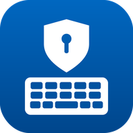

Keyboard Cleaning Lock
Lock your keyboard so you can wipe it without typing anything. Unlock with a big on-screen button, a key combo, or a timer.
Formerly CleanLock.
Windows 10 (1809+) and Windows 11 · x64 and ARM64 · One-time purchase
Get it from Microsoft Store
Features
- Global hotkey (default Ctrl+Alt+L) starts a lock from anywhere
- Blocks keystrokes while you clean so nothing reaches other apps
- Optional mouse / touchpad lock
- Unlock: big on-screen button · Ctrl+Alt+U · auto-unlock timer
- Countdown before lock · tray icon · fullscreen overlay
- 15 UI languages · fully offline · no telemetry, ads, or accounts
- One-time purchase (local Store price)
Honest limitation
Keyboard Cleaning Lock cannot block Ctrl+Alt+Delete. Windows always delivers that secure attention sequence to the OS, which is good — you can always recover.
Privacy
See the privacy policy. Keystrokes are blocked, never recorded.